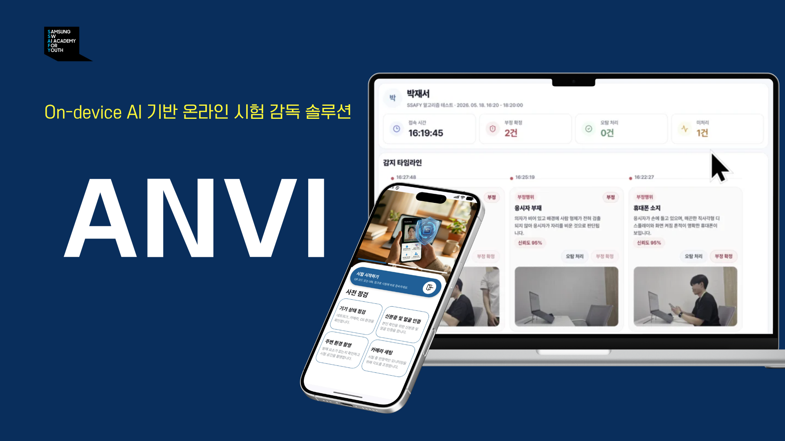

장애 없는 서비스를 만들기 위해, 실패 경로까지 설계하는 백엔드 개발자 정혜원입니다.
백엔드 시스템의 진정한 가치는 '사용자가 체감하지 못하는 안정성'에 있다고 믿습니다. 그렇기에 단순히 기능이 동작하는 해피 경로(Happy Path)에 만족하지 않고, 외부 시스템 장애나 트랜잭션 롤백과 같은 예측 불가능한 실패 상황에서도 비즈니스 로직이 멈추지 않도록 방어적으로 설계합니다.
이런 철학을 바탕으로, 실시간 채팅의 동기화 일관성 확보부터 Redis 고가용성(HA) 인프라 구축, 그리고 시스템 메트릭 모니터링 환경 구성까지 시스템 전반의 단단함을 다져왔습니다.
또한, 개인이 잘 짜는 코드를 넘어 팀 전체가 무너지지 않는 구조를 고민합니다. 상태 모델에 기반한 안전한 권한 정책을 설계하고 초기 컨벤션을 단단하게 주도하여, 팀원 모두가 비즈니스 로직에만 집중할 수 있는 환경을 만들기 위해 노력합니다.
